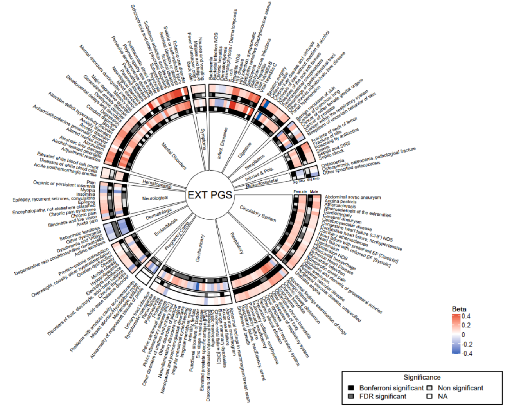
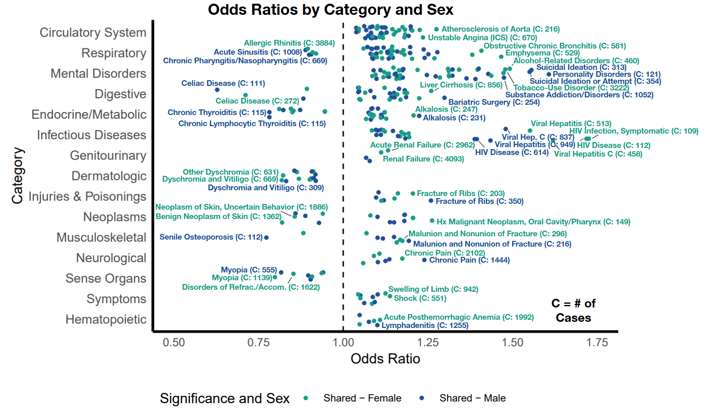
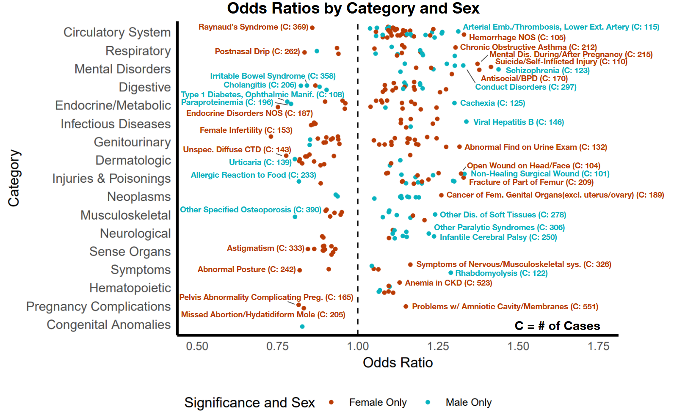
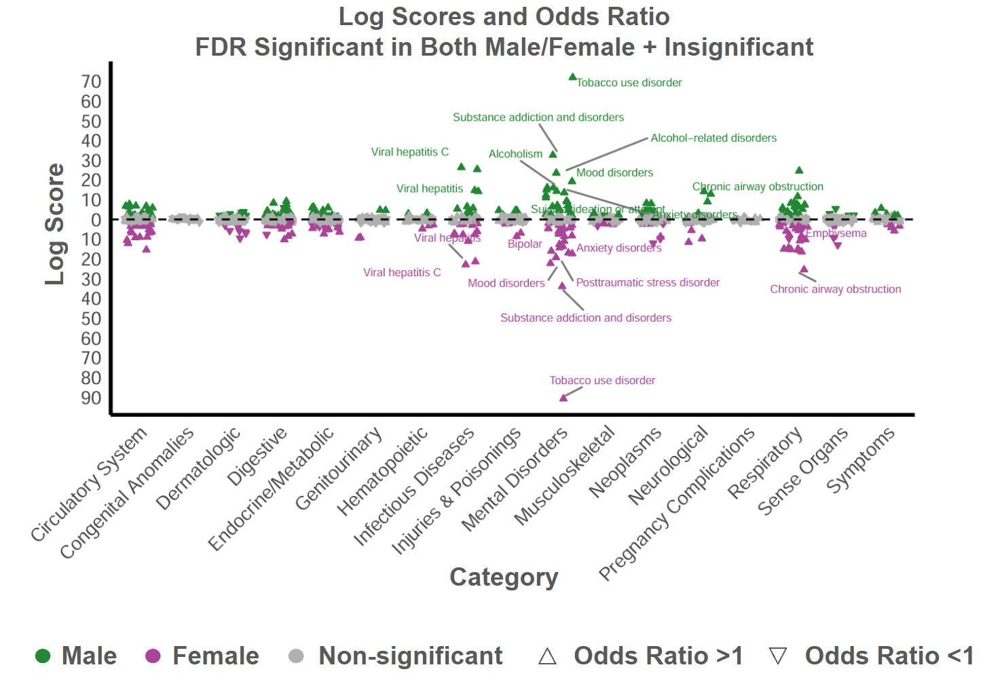
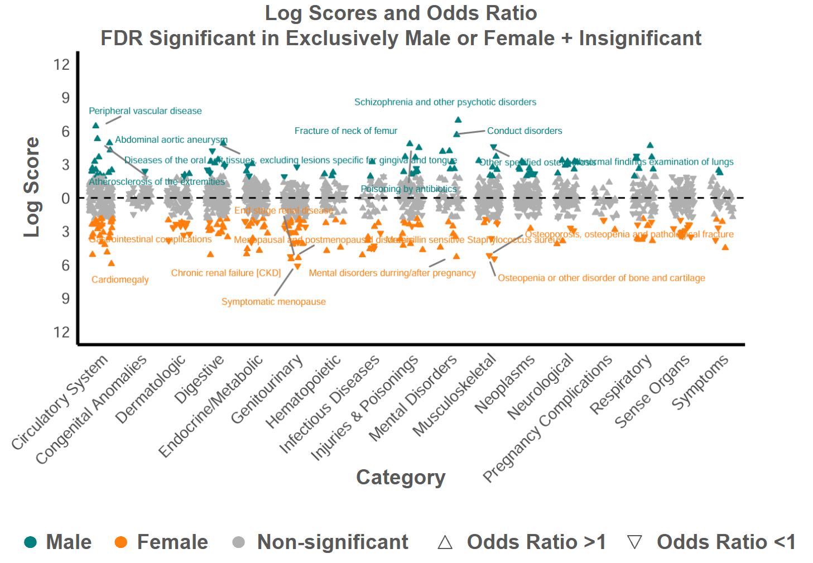
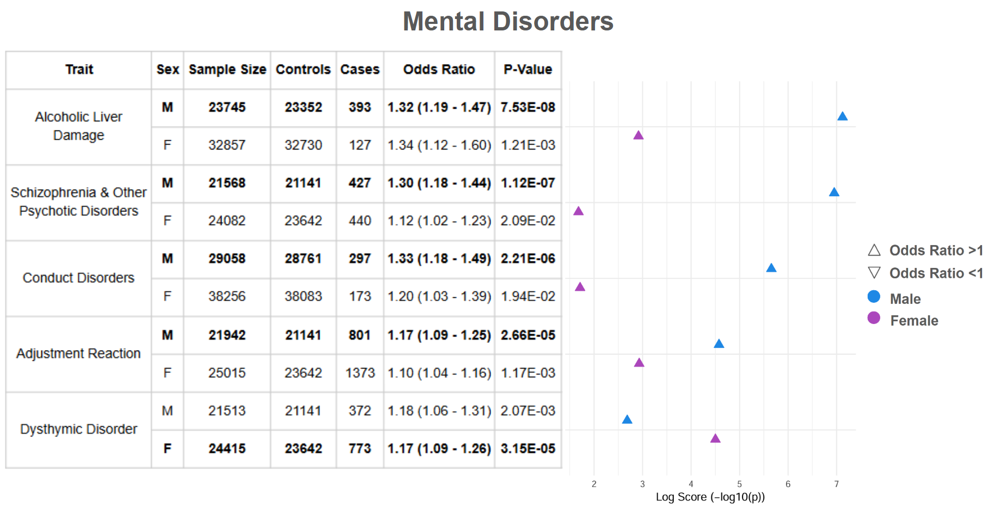
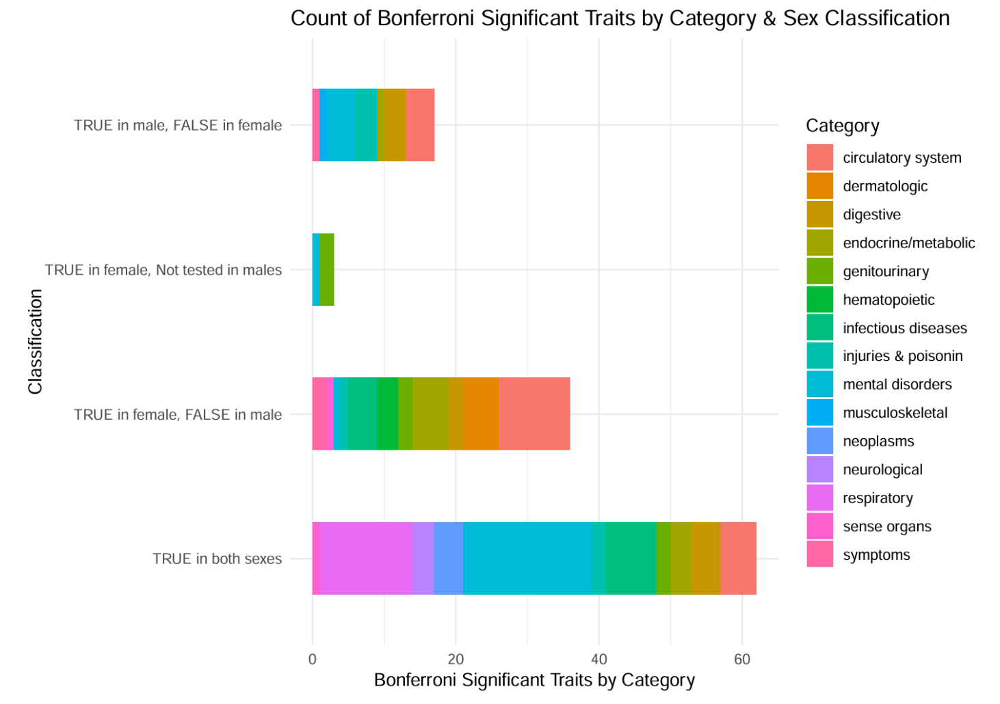

I have been working as a research assistant for Dr. Courchesne-Krak here at UCSD in the Bioinformatics department for about a year now. I have been helping with data cleaning, data analysis, and mostly data visualization. I will soon be published as a co-author on one, maybe two papers, though they are not quite done yet. Below are some examples of figures I have made.
      